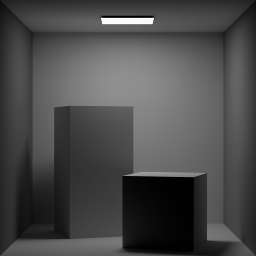
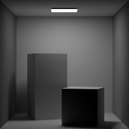
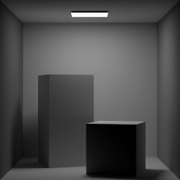

**Assignment 0**
**Assignment 0**
(##) Part 1: Vectors
- [x] Read `void test_vectors_and_matrices()`
(##) Part 2: Colors and Images
- [x] Generate a `gradient.png` image
- [x] Convert `cornellbox.png` to grayscale.

(##) Tutorial output
For this assignment, make sure to run the tutorial and save the output, for instance with:
`build/darts_tutorial0 > output.txt`
```
--------------------------------------------------------
PROGRAMMING ASSIGNMENT 0, PART 1: Vectors and Matrices
--------------------------------------------------------
v1 = {-0.1, 0.2, -0.3}
v2 = {1, 1, 1}.
v3 = {0.5, 0.25, -0.123}.
You can access specific components using x, y, and z.
The z coordinate of v3 is -0.123.
We can also element-wise add, subtract, and multiply vectors:
v1 + v2:
{-0.1, 0.2, -0.3}
+ {1, 1, 1}
= {0.9, 1.2, 0.7}
v1 / v3:
{-0.1, 0.2, -0.3}
/ {0.5, 0.25, -0.123}
= {-0.2, 0.8, 2.4390244}
or perform mixed vector-scalar arithmetic
scalar * v2:
2
* {1, 1, 1}
= {2, 2, 2}
We can compute the length of a vector, or normalize it, or take the dot product or cross product of two vectors:
The length of v2 is: 1.7320508
The squared length of v2 is: 3
A normalized copy of v2 is: {0.57735026, 0.57735026, 0.57735026}
Let's confirm that its length is 1: 0.99999994
The dot product of v1 and v3 is: 0.036900003
The cross product of v1 and v2 is: {0.5, -0.20000002, -0.3}
The angle between v1 and v3 is: 80.07874
Result correct!
The origin of ray is {0.5, 2, -3}.
The direction of ray is {-0.25, -0.5, 0.3}.
The matrix is
{{1, 0, 0, 0},
{0, 2, 0, 0},
{0, 0, 3, 0},
{4, 5, 6, 1}}.
The inverse is
{{1, 0, 0, 0},
{0, 0.5, 0, 0},
{0, 0, 0.33333334, 0},
{-4, -2.5, -2, 1}}.
mat*inv should be the identity
{{1, 0, 0, 0},
{0, 1, 0, 0},
{0, 0, 1, 0},
{0, 0, 0, 1}}.
--------------------------------------------------------
PROGRAMMING ASSIGNMENT 0, PART 2: Color & image tutorial
--------------------------------------------------------
white = {1, 1, 1}.
red = {1, 0, 0}.
blue = {0, 0, 1}.
magenta = {1, 0, 1}.
pinkish = {1, 0.5, 0.5}.
still_red = {1, 0, 0}.
Red channel of pinkish is: 1
Green channel of pinkish is: 0.5
Blue channel of still_red is: 0
After scaling by 2, red channel of pinkish is: 2
The luminance of pinkish is: 0.8190065
25% of the way from blue to red is: {0.25, 0, 0.75}.
Creating gradient image.
Saving image "gradient.png" ...
Loading image cornellbox.png ...
Loading: scenes/assignment0/cornellbox.png
│████████████████████████████████████████████████████████████████████████████████████████████████████████████████████████████████████████████████████████████████████████████████████│
(45ms)
Converting image to grayscale....
Saving image cornell_grayscale.png....
Done!
```

 
